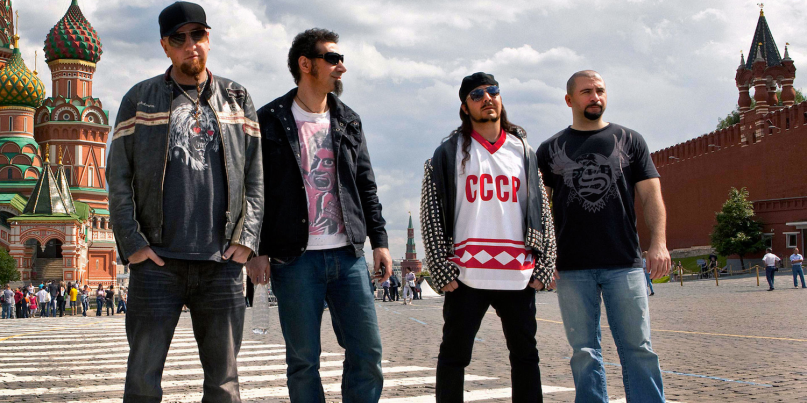

About the band...

System of a Down is an Armenian-American heavy metal band from Glendale, California, formed in 1994. The band currently consists of Serj Tankian (lead vocals, keyboards), Daron Malakian (vocals, guitar), Shavo Odadjian (bass, backing vocals), and John Dolmayan (drums).
Members: Shavo Odadjian, Serj Tankian, Daron Malakian, John Dolmayan. (accordingly)
The band achieved commercial success with the release of five studio albums, three of which debuted at number one on the US Billboard 200. System of a Down has been nominated for four Grammy Awards, and their song "B.Y.O.B." won a Grammy Award for Best Hard Rock Performance in 2006. The band went on hiatus in 2006 and reunited in 2010; since then, they have performed live occasionally despite having not released any new material since the Mezmerize and Hypnotize albums in 2005. System of a Down sold over 40 million records worldwide, and their singles "Aerials" and "Hypnotize" have both reached number one on Billboard's Alternative Songs chart.